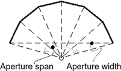

The Tower and Receiver page displays variables that specify the geometry of the heat collection system. The receiver model uses semi-empirical heat transfer and thermodynamic relationships to determine the thermal performance of the receiver. This allows the model to represent a wide array of geometries without deviating from a hypothetical reference system.
Page numbers relevant to this section from references cited with download links under "Power Tower" on the CSP Publications page of the SAM website:
•Wagner (2008) p 43-47, 68-71
The model makes several assumptions about the system geometry for external receivers:
•The receiver consists of a discrete number of panels.
•Each panel in the receiver consists of a set of parallel tubes in thermal contact that share a common heat transfer fluid (HTF) header.
•The panel tubing is vertical and the heat transfer fluid flows through each sequential panel in a serpentine pattern (up one panel and down the adjacent panel).
•The number of tubes per panel is a function of the Number of Panels, Receiver Diameter, and Tube Outer Diameter variables.
The model varies the heat transfer fluid mass flow rate through the receiver to maintain the required outlet heat transfer fluid temperature. The model includes several practical safeguards to ensure realistic behavior in the receiver. For example, the mass flow rate through the receiver is limited to the value of the Max Flow Rate to Receiver variable, and the maximum receiver heat transfer fluid inlet temperature is kept at a value below the value of the Max Temp to Receiver variable.
SAM allows several options for the heat transfer fluid flow patterns through the receiver as indicated by the diagrams on the Receiver / Tower page. The Flow Pattern variable specifies the path taken by the fluid as it passes through the receiver. Options include a full circle around the receiver, a split path around the receiver, and a split pass with a single cross-over.
System Design Parameters
The system design parameters are variables that you specify on the System Design page. They are shown here for reference.
Solar multiple
The solar multiple determines the receiver's nominal thermal capacity. It is the ratio of the receiver design thermal output to the power cycle design thermal power input. For a system with no storage, the solar multiple should be close to or equal to one.
Receiver thermal power, MWt
The receiver's thermal power output at the design point.
Receiver Thermal Power (MWt) = Solar Multiple × Cycle Thermal Power (MWt)
HTF hot temperature, °C
The temperature of the hot heat transfer fluid at the receiver outlet when the power cycle operates at its nameplate capacity under design conditions.
HTF cold temperature, °C
The temperature of the cold heat transfer fluid at the receiver inlet when the power cycle operates at its nameplate capacity under design conditions.
Receiver Material and Heat Transfer Properties
Material type
The material of the receiver panel tubes, typically a stainless-steel alloy. The current version of SAM allows only one material type.
Tube outer diameter, mm
The outer diameter in millimeters of the tubing that carries the heat transfer fluid through the receiver panels. Typical values range from 25 mm to 50 mm.
Tube wall thickness, mm
The thickness in millimeters of the individual receiver panel tube walls.
Coating emittance
The emissivity of the receiver coating, assumed to be black-body emissivity constant over the range of wavelengths.
Coating absorptance
Absorptance fraction of receiver tube coating. Typical values are 0.91 to 0.95.
Heat loss factor
A receiver heat loss adjustment factor that can be used when the calculated heat loss value deviates from an expected value. The default value is 1, corresponding to no heat loss correction. The calculated receiver heat loss is the sum of convection and radiation losses from the receiver, reported in the hourly results as Rec_conv_loss and Rec_rad_loss, respectively.
Piping Losses
Piping heat loss coefficient, W/m2-K
Thermal energy loss per meter length of piping between the tower and thermal storage system, including both hot (downcomer) and cold (riser) header piping. This loss does not include thermal losses from the receiver due to convection, emission, or reflection. Default value is 2 W/m²-K.
Piping length constant, m
Fixed piping length used to calculate the total piping length for thermal losses.
Piping length multiplier
Factor multiplying the tower height that is used to calculate the total piping length for thermal losses.
Piping length, m
Calculated total piping length used to calculate the piping thermal losses.
Piping Length (m) = Piping Length Multiplier × Tower Height (m) + Piping Length Constant
Note that this this piping length is used only in the calculation of thermal energy loss from the receiver and is not used for pressure loss or pumping parasitic power requirement calculations.
Total piping loss, kWt
The calculated thermal energy loss due to header piping, applied whenever the receiver is operating.
Total piping loss (kWt) = Piping length (m) × Pipe circumference (m) × Piping heat loss coefficient (W/m2-K) × (T_pipe – T_ambient) ÷ 1000 (kW/W)
The total piping loss calculation involves internal values that are not available in the user interface. The pipe circumference depends on the properties of the heat transfer fluid at design conditions. The calculation also accounts for the difference in pipe temperature in the cold riser and hot downcomer.
Design Performance Metrics
The user interface calls the MSPT technology design-point models to estimate high-level performance metrics. Because this computation must be fast, we do not use SolarPILOT to calculate flux maps. Instead, we assume a simple sine wave distribution:
where:
We iterate between the value of and the steady state receiver thermal performance model until the calculated heat transferred to the HTF is equal to the design receiver thermal power. Finally, we report thermal efficiency and pumping power at those conditions. These metrics can show if the plant design has obvious limitations, like significant pumping power requirements (e.g. because the flow path is too long or the tubes are too small) or poor efficiency.
Heat Transfer Fluid
HTF type
One of two types of solar salt used for the heat transfer fluid, also called the working fluid. You can also add a user defined HTF by choosing the user defined option and clicking the Edit button to open the HTF properties editor.
Property table for user-defined HTF
When the HTF type is User-defined, click Edit to open the HTF properties editor. See Custom HTF for more about working with custom fluids.
Tower and Receiver Dimensions
Tower height, m
Height in meters of the tower structure, equal to the vertical distance between the heliostat pivot points and the vertical center of receiver.
Notes.
The tower height may be automatically calculated by SolarPILOT depending on the options you choose on the Heliostat Field page.
SAM assumes that the heliostat pivot point is half of the heliostat height so that there is no ground clearance when the heliostat is vertical.
Receiver Flux Modeling Parameters
Maximum receiver flux, kWt/m2
The maximum allowable incident flux on the receiver, before reflection, re-radiation, or convection losses.
The maximum flux is used only during optimization when SAM manipulates the receiver geometry to satisfy the maximum flux constraint. Flux intensity is determined at the reference design condition (noon on the summer solstice) at the Design-point DNI value that you specify. The flux is checked along a grid of points on the receiver. The flux grid has 10 equally-spaced vertical points per panel.
Estimated receiver heat loss, kWt/m2
The estimated receiver heat loss at design-point operation per unit area of receiver surface.
This value is used to determine the amount of additional power required from the solar field to overcome receiver heat loss. In previous versions of SAM, this value was assumed to be 30 kWt/m2.
Note that this value is used only to determine the required solar field size and does not affect annual hourly performance simulation results once the layout has been specified.
Number of days in flux map lookup
The number of days used to calculate the receiver flux map lookup table.
When calculating receiver flux maps, SAM uses the number of days that you specify but spaces them throughout the year according to the variation in sun position. SAM chooses the actual days to simulate by maintaining equal solar angle spacing among each day. The spacing between days is important in ensuring that the flux map lookup table is as comprehensive as possible.
The following plot shows flux map sun positions for 8 lookup table days and hourly simulations. Equal spacing is maintained between daily profiles.
Hourly frequency in flux map lookup
The hourly frequency over the course of each flux map simulation day at which simulations are executed.
For example, the plot above (see No. Days in Flux Map Lookup) provides simulations on an hourly frequency. If you specify 2 as the hourly frequency, simulations will be executed every other hour; 3 will be executed every third hour, etc.
SAM always constructs the hourly simulations to ensure symmetry about solar noon. A simulation will always be performed at solar noon, and the hourly frequency determines the nearest times for simulation in the morning and afternoon hours. Increasing the hourly frequency value decreases the number of simulations included in the flux map lookup table and may increase interpolation error. Decreasing the frequency has the opposite effect.
Design and Operation
Minimum receiver turndown fraction
The minimum allowable fraction of the maximum flow rate to receiver.
Maximum receiver operation fraction
The maximum allowable fraction of the maximum flow rate to receiver. SAM removes heliostats from operation if the HTF mass flow rate exceeds the maximum allowable value.
Receiver startup delay time, hr
The time in hours required to start the receiver. The receiver starts whenever the radiation incident on the field in the previous hour is zero, and there is sufficient thermal energy in the current hour to meet the thermal design requirement. SAM calculates the start up energy as the product of the available thermal energy, startup delay time, and startup delay energy fraction.
Receiver startup delay energy fraction
Fraction of receiver design thermal power required by the receiver during the startup period.
Receive HTF pump efficiency
The electro-mechanical efficiency of the receiver heat transfer fluid pump.
Design receiver mass flow rate, kg/s
The heat transfer fluid flow rate at the receiver inlet under design conditions.
Maximum flow rate to receiver, kg/s
The maximum heat transfer fluid flow rate at the receiver inlet. SAM calculates this value as a function of the maximum heat transfer fluid velocity in the receiver.
Maximum Flow Rate to Receiver = Maximum Receiver Operation Fraction × Receiver Thermal Power (MWt) × 1,000,000
÷ HTF Specific Heat × 1,000,000 × ( HTF Hot Temperature ºC - HTF Cold Temperature ºC )
Design HTF velocity in receiver tube, m/s
The heat transfer fluid velocity under design conditions.
Receiver Parameters
External Receiver
Receiver height, m
Height in meters of the receiver panels.
Receiver diameter, m
Total diameter in meters of the receiver. The distance from center of the receiver to center of a receiver panel. The width of a single panel is the circumference of receiver divided by number of panels.
Note. The receiver height and diameter may be calculated by SolarPILOT depending on the options on the Heliostat Field page.
Number of panels
Number of vertical panels in the receiver.
Note. For Flow Pattern options 1-4, Number of Panels must be a multiple of 2. If you specify an invalid number, the simulation will fail, and SAM will generate an error message.
Flow pattern
One of eight available heat transfer fluid flow configurations shown in the diagram.
The view in the diagram is from the top of the receiver, assuming that panels are arranged in a circle around the center of the receiver. Arrows show the direction of heat transfer fluid flow into, through, and out of the receiver, with arrows pointing up indicating flow toward the north.
Cavity Receiver

Receiver height, m
Height in meters of the receiver panels.
Receiver aperture width, m
Width of the aperture opening.
Note. The receiver height and aperture width may be calculated by SolarPILOT depending on the options on the Heliostat Field page.
Receiver aperture span, degrees
The span of the aperture.
Passive surface absorptivity
Property of the panel surface.
Passive surface abosrptivity
Property of the panel surface.
Total receiver area, m²
Receiver area calculated from receiver dimensions and number of panels.
Cavity radius, m
Receiver cavity radius calculated from number of panels and aperture span and width.
Panel width, m
Panel width calculated from number of panels and aperture span and width.
Custom HTF
If the heat transfer fluid you want to use in the solar field is not included in the Field HTF Fluid list, you can define a custom heat transfer fluid using the User-defined option in the list. To define a custom fluid, you need to know the following properties for at least two temperatures:
•Temperature, ºC
•Specific heat, kJ/kg-K
•Density, kg/m³
•Viscosity, Pa-s
•Kinematic viscosity, m²-s (not required, see note below)
•Conductivity, W/m-K
•Enthalpy, J/kg (not required, see note below)
Note. The kinematic viscosity and enthalpy data in the table are not used by the CSP models. These properties are redundant: Kinematic viscosity is the ratio of viscosity to density, and the heat balance equations use specific heat instead of enthalpy.
To define a custom heat transfer fluid:
1.In the Field HTF fluid list, click User-defined.
2.In the Edit Material Properties table, change Number of data points to 2 or higher. The number should equal the number of temperature values for which you have data.
3.Type values for each property in the table.
You can also import data from a text file of comma-separated values. Each row in the file should contain properties separated by commas, in the same the order that they appear in the Edit Material Properties window. Do not include a header row in the file.
Notes
Each row in the materials property fluid table must be for a set of properties at a specific temperature. No two rows should have the same temperature value.
SAM calculates property values from the table using linear interpolation.
The rows in the table must sorted by the temperature value, in either ascending or descending order.
The physical trough model uses the temperature, specific heat, density, viscosity, and conductivity values. It ignores the enthalpy and kinematic viscosity values (the empirical trough model does use those values).
For the physical trough model, if you specify user-defined HTF fluids with the same properties for the solar field and thermal storage system, on the Thermal Storage page, SAM disables the Hot side HX approach temp and Cold side HX approach temp inputs, and sets them to zero internally to represent a system with no heat exchanger. (When the hot and cold side approach temperatures are zero, Thermal storage exergetic efficiency is one.)